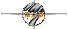
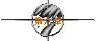

※第一次的亲密接触※
written by jht.

她竟然还留这么一手..难怪人家说“最毒妇人心”。
不过..天助我也..因为我的机车是一辆老旧破烂的蓝色野狼。
『蓝色的油缸..黑色的座垫..像是漂满油污的高雄港海水..
这是最适合形容外表凉薄内心深情的天蝎座个性的水了..』
「痞子..恭喜你..你可以正式开始约我了..」
到了她家楼下..她突然说出这句让我感到晴天霹雳的话..
“晴天霹雳”原本是不好的形容词..但因为我爱雨天，所以霹雳一下反而好。
『明天下午一点..这里见..我的老规矩..你先吃完饭..』
「OK..没问题..我的老规矩..你请客..」
她转身打开了公寓大门..然后再回头对我倾城一笑..
我抬起头..看到四楼由阴暗转为明亮..
我放心地踩动我的蓝色野狼..离开了这条巷子...
我精神恍忽地回到系馆，爬到位于三楼的研究室。
今天才知道，一楼到三楼，共有53阶楼梯..
坐在pc前，凝视著空白的萤幕，脑海里同样也是一片空白...
我所受到的训练，只是教我如何分辨亚临界流和超临界流..
至于现实与梦境之分，我不晓得该用那条方程式去判断..
│
《荆轲！..荆轲你竟然还能活著回来!?...秦王的头呢？..》
幸好是看到阿泰，我终于知道我现在不是在梦境里..
因为我没那么倒霉..阿泰这家伙是不可能出现在我的梦境里的。
《唉！..可怜的痞子..你一定是“惊艳”了..被她的外表吓死了吧！..》
2V
『嘿嘿..阿泰..我的确是惊艳..不过是惊喜的惊..而非惊恐的惊..』
阿泰突然放下手中的两瓶麒麟啤酒，露出怀疑的眼神..
《真的假的？..那岂不是一朵鲜花插在..》
我暗运内力，准备当听到“牛粪”两个字时，给他一记降龙十八掌..
《插在一个高雅的花瓶中..果真是英雄美女..才子佳人..相得益彰ㄚ！..》
阿泰果然了得..虽然有张毒辣的嘴巴，但同时还有灵敏的反应..
《痞子..说说看..长得如何？..什么系的？..》
『她念外文..至于长相..大概可以让你的六宫粉黛无颜色..』
《不可能吧!?..自从小萍那一届毕业后..外文系已经每下愈况，后继无人了..
而且在我的辖区内..怎么可能会有我不认识的美女？..》
『阿泰..我想你已经老了..“江山代有美女出，各领风骚好几年”..
美女这东西..就像“长江后浪推前浪”一样..一浪接著一浪..数不完的..』
《说得也是..不过我实在不相信成大女生的浪会有多高..》
说真的..我也不相信..套句我的专业术语..成大女生可以“碎波”来形容。
所谓的碎波就是波浪由深海传递至浅海时，由于水深变浅所导致..
因为成大的水深太浅了..所以可算是有名的“碎波带”..
《不过美女也实在够惨..俗话说：“痴汉偏骑良马走，巧妻常伴拙夫眠”..
由此观之..红颜果真薄命也..》
『阿泰..人家说我有才气ㄋㄟ..我们这算是名符其实的“郎才女貌”..』
《痞子..这是应酬的场面话..不要太当真..你又不是我，怎么会有才气？..
照我看来..你们算是“Beauty and Beast”..现实生活版的美女与野兽..》
『我是Beast...那你呢？..』
《我比你少一个a...所以我是Best..》
阿泰竟然处处跟我作对，看来他今晚的约会一定是刀光剑影..
『阿泰..你今天的约会很惨ㄏㄡ!?..』
《喔..你是说B-161-48-34-25-33这个女孩吗？..我挨了她一个巴掌..》
『哈哈哈！..你一定是未经许可，就想吻她..所以才挨打吧!?..』
《不是的..是我得到了她的允许..却还不肯吻..》
※＆＠＃☆....【注】：这句话即是所谓的十元买早餐，八元买豆干..
《我是说真的..因为我不喜欢她口红的颜色..》
哇ㄌㄟ...连口红颜色也挑..太挑食了吧！
难怪很多人常感叹这世间有些人一无所有..有些人却得到太多..
《痞子..俗话说：“千军易得，一将难求”..又说：“兵贵精不贵多”..
所以你算是好狗运..比我幸运多了..》
『可是我觉得我没办法搞定她ㄋㄟ..她有点古灵精怪..常喜欢考我..』
《痞子..你没听说过：“将在谋不在勇”吗？..虽然你无勇无谋..
但有我这个智勇双全的人帮你..你放心好了..不要担心我的能力..》
我担心的..不是你的能力..而是你的个性..
《痞子..别开玩笑了..“朋友妻，不可欺”..我会是那种人吗？..》
你是那种觉得“朋友妻，不欺，朋友会生气”的那种人。
《痞子..别闹了..快告诉我..还发生了什么事？..》
不知道ㄋㄟ..反正就是聊天嘛！..还能干嘛？..
《那她有没有骂你？..》
她干嘛骂我？..我一不油腔滑调..二不毛手毛脚..又不像你..
《痞子..那你要走的路还很长ㄛ！..》
是吗？..我又不是变态，为什么一定要挨骂才会痛快呢？..
《痞子..你有没有听过“爱之深，责之切”这句话？..》
『阿泰..有屁就快放..别老是翘起屁股，然后停顿下来..』
《这句话的意思就是说..当一个女孩子爱你愈“深”时..
她责备你时就愈会咬牙“切”齿..》
那怎么办？..她今天一直在笑ㄋㄟ..除了我讲A片时..她稍为瞪我一下..
《那还好..聊胜于无..有瞪总比没瞪好..》
我没有告诉阿泰..即使她瞪著我..
我仍然觉得她的眼神里，满是笑意...
《痞子..既然你没什么失恋的感觉..那啤酒就不用喝了..》
其实这是我跟阿泰之间的默契，酒确实是失恋时的天敌。
但是失恋程度应该和酒精浓度成反比..亦即愈是失恋..喝的酒愈淡..
不然当你失恋时是很容意酗酒的..喝太多烈酒岂不伤心伤肝又伤身？
所以我常喝酒精浓度最淡的生啤酒...但特殊日子不在此限..
因此中国情人节失恋时可喝高粱..西洋情人节失恋时则喝XO..
《痞子..我们改喝SUNTORY的角瓶威士忌吧！..》
『那这两瓶麒麟啤酒呢？..』
《先冰著..反正过两天你大概就可以喝了..》
『shit！..你那么有把握我一定会失恋？..』
《痞子..我是就事论事..不是做人身攻击..我实在找不出你不失恋的理由..》
阿泰倒了两杯SUNTORY..金黄色的威士忌..跟他衬衫的颜色好像..
『像太阳般金黄色的酒浆..有棱有角的冰块和酒杯..
这是最适合形容乐观开朗，正直坦率的射手座个性的酒了..』
《痞子..你脑袋秀逗了吗？..》
『sorry！..我这是被轻舞飞扬训练出来的反射动作..
看到有颜色的饮料，就得联想到星座特质..』
《痞子..那轻舞飞扬是属于什么型的？..B？..C？..H？..N？..or T？..》
『都不像ㄋㄟ..她比较像S型..』
《又不是考汽车驾照..那来的S型？..》
『聪明慧黠型..英文叫smart..所以是S型..』
《痞子..不会分类就不要乱分..你如果说是S型..人家会以为是sexy..》
人家？..大概只有你这种思想邪恶的人吧!?..
『阿泰..明天我要和她去看电影ㄋㄟ..有没有什么好片？..』
《问我就对了..最近刚上映的“铁达尼号”..已经造成轰动了..
而且这部片子也变成另一种判断性别的指标了..》
『判断性别？..你在扯啥？..』
《痞子..最近流行一句话..看铁达尼而不哭泣者，其人必不是女的..》
不会这么夸张吧!?..我怎么都没听过？..
《痞子..你不是江湖中的人物..所以这种事你是不会知道的..
“铁达尼号”我已经看了三遍..当然是跟三个不同的女孩子..
包括今晚的B-161-48-34-25-33..昨晚的C-163-47-33-23-32..
还有上星期的T-160-43-32-24-32..她们的第一志愿就是“铁达尼号”..》
『好看吗？..』
《女主角胖了一点..尤其是腰部..不过胸部还不错..臀部也颇具风味..》
『我是问你电影情节..你扯女主角的身材干嘛？..』
《喔！..抱歉..我日本AV片看太多了..而AV片的好看与否..跟情节是无关的..
只跟女演员的身材好坏..长相美丑..与叫声大小有密切相关..
所以浅仓舞、饭岛爱、忧木瞳和白石瞳才会那么有名..》
『阿泰..快告诉我电影情节..别再扯一些有的没的..?
《好像就是一艘船..撞到了冰山..然后开始沉没..有的人大呼小叫逃难..
有的人处变不惊演奏音乐..还有人很倒霉地被铐在船舱里..
然后男主角沉到海底..女主角Rose被救起..还一直活到90几岁..》
『那为什么女孩子看完后就会流眼泪呢？..』
《我也不知道..当男主角Jack松开了手..沉入冰冷的海底时..
电影院里就开始哀鸿遍野...》
Jack？..竟然跟我的英文名字一样..
看来我以前的昵称叫“深情的Jack”的确有先见之明..
『阿泰..那你都不会觉得心痛吗？..』
《当然会ㄚ！..当老Rose把那颗“海洋之心”丢到海里时..我的确很心痛..》
跟阿泰这种人讨论艺术..我可算是自取其辱了..
《不过有一点值得注意的是..她们看完电影后..一定会问我相同的问题..
那就是：“If I jump，Do you jump？”..》
是吗？..问这种问题，不会太无聊吗？..
《痞子..女孩子最喜欢问这种假设性的问题..但却要求得到肯定性的答案..》
那怎么办？..如果照实回答..岂不自寻死路？
《不会ㄚ！..我都会回答说：“答案是肯定的”..》
你少唬我..照这种跳法..你不是早就得世界跳水冠军？..
《痞子..我只说答案是肯定的..我又没说肯定会..还是肯定不会..
我才没那么傻ㄌㄟ..如果她jump..我当然“肯定”不会跳..》
『阿泰..你又在混了..』
《痞子..所以我说你要走的路还很长..
这种简单明了的回答，包含了多少人生的哲理与情场的智慧..
举例来说..如果有一天女孩子问你：“你会不会永远只爱我一个？”时..
一句“当然”就可应付过去了..但到底是当然会..还是当然不会..
就只有你自己心里知道..》
『万一她很聪明..继续问你：“当然会？..还是当然不会？”时..怎么办？』
《痞子..这种聪明的女孩子太少了..说得上是可遇而不可求..
不过如果她真的这样问..你还是可以回答：“当然会”..》
『那岂不是撒谎了？..』
《笨蛋..你心里想的是：“我当然会不只爱你一个”..
这就是所谓的“返璞归真”..到了这种境界..
你便不需要任何甜蜜动听的谎言..也能够达到欺敌的效果了..》
跟阿泰喝完酒，也已经快深夜三点了。
不禁又开始回想起今晚和轻舞飞扬见面时的细节..
幸好我没有写日记的习惯，不然今晚发生的一切..我真不知道该如何下笔？
要不是刚刚碰到阿泰的话..这样的夜，就可以叫做完美。
然而进展地如此顺利，却反而令我不安..
孟子有云："生于忧患，死于安乐"..
也许我和轻舞飞扬间，只是一种"回光返照"的现象..
研究室窗外的那只野猫，又开始叫了..
虽然声音低沉了许多，但仍然是三长一短..看来这只野猫也是很有原则的..
不过它今天的喉咙大概出了点状况..
我想我应该拿瓶京都念慈庵川贝枇杷膏给它润喉一下..
而且还是那种有孝亲图样的正牌枇杷膏。
以前我总是依赖它当我的闹钟，以便准时在三点一刻上线..
后来慢慢地不再需要它了..
因为时候一到..我的精神总是特别兴奋和抖擞..
如果有天没在深夜三点一刻的网路上碰到轻舞飞扬..我一定会浑身不对劲。
听说这种情形在心理学上，叫做"制约反应"。
所以我想，我大概是被轻舞飞扬"制约"了..
而那只野猫，也许也是被其她的性感野猫们所制约。
于是时间一到..它开始Call Spring..我也打开pc，上了线...
「痞子..晚安ㄚ！..今天累吗？..」
说我不惊讶是骗人的..说我不累也是骗人的..
尤其在心情像是坐了一次云霄飞车后..加上酒精的催化..我只想好好睡一觉..
如果不是我已经被她制约了..我是绝对不会在这时候还上线的..
而她为什么也在这时候上线？..她不累吗？..难道她也被我"制约"了？..
『好久不见了..你好吗？..』
「痞子..你又吃错药了..我们才分别3个小时而已ㄚ！..:)..」
古人有"一日不见，如隔三秋"之叹..如果真是这样的话..
那我们大概有3*365/8≈137天没见..当然可以算很久了..
「呵:)..痞子..那你想我吗？..」
『A.想 B.当然想 C.不想才怪 D.想死了 E.以上皆是..The answer is E..』
「如何想法呢？..」
『A.望穿秋水不见伊人来 B.长相思，摧心肝 C.相思泪，成水灾
D.牛骨骰子镶红豆--刻骨相思 E.以上皆是.. The answer is still E..』
「呵呵..：）...」
看来她真的也累了..
虽然"呵"是笑声，但此时我却觉得她在打"呵"欠..
「痞子..我们会"见光死"吗？..」
其实网友一旦见了面后，结局通常都很悲惨..
就像阿泰一样..如果不甚满意..就会把她们从好友名单中剔除..
免得日后在线上碰到..触景伤情..所以乾脆来个眼不见为净..
如果对方先送Message来问好..阿泰就会说要去上课了、要去吃饭了、
要跟朋友去玩了、要去睡觉了...然后手忙脚乱地离线..
这就是所谓的"君子不立于危墙之下"之逃难法..
要不然就会说："真可惜..难得又遇上你..奈何造化弄人..事与愿违..
现有俗事缠身..不得不走耳..只得洒泪而别..抱憾而归..肝肠寸断矣"..
这就是所谓的"睁眼说瞎话"之逃难法..
「为什么网路和现实总会有那么大的差异呢？..」
因为在网路上，你根本无法看到对方的表情..听到对方的语气..
所以只好将喜怒哀乐用简单的符号表示..
例如笑脸符号就有":)"、"^_^"、":P"、"^O^"..等等。
但如果喜怒哀乐真能用符号表示的话，就不会叫做喜怒哀乐了..
换言之..当对方送来任何一种笑脸符号时，谁又能把握他正在笑呢？..
也许他心里抱著"买卖不成仁义在"的心态，跟你应酬个几句..
因此对陌生的两个人而言，网路有时只能缩短认识的时间而已..
待续
| 


 
